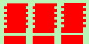
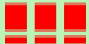

Images captured by videocards, especially when fast movement is recorded, may look blurred and striped, with split objects. This is due to how cameras work. They don't record 25 images per second, but 50, with half vertical resolution. There are two interlaced images in one frame. First line of first image is followed by first line of second image followed by second line of first image, etc. So, if there have been an important move between the two images, objects will appear split, shifted, striped.
The Deinterlace filter keeps only one of both images and replaces missing lines by a gradient between previous and following lines. The resulting image, or selection, will be somewhat blurred, but can be improved by enhance filters.
You can find interlaced images at [WKPD-DEINTERLACE].

- Presets, “Input Type”, Clipping, Blending Options, Preview, Merge filter, Split view
-
![[Note]](images/note.png)
Note These options are described in Section 2, “Common Features”.
- Keep
-
This setting lets you choose between Keep even fields and Keep odd fields. It determines which pixels are kept and which are removed. Try both options to see which gives the best results for your image.
- Orientation
-
This setting lets you choose between deinterlacing Horizontal or Vertical lines.
- Block size
-
This option lets you set the size of the deinterlaced rows or columns.
Figure 17.40. Simple applying example for the Deinterlace filter

Top: even lines pixels are shifted by one pixel to the right. Bottom: one line is missing. These images are zoomed to show pixels.
“Keep even fields” selected. Top: odd lines have been shifted to the right, to align themselves with the even lines. Bottom: the empty line has been filled with red.

“Keep odd fields” selected. Top: even lines have been shifted to the left, to align themselves with the odd lines. Bottom: the empty line persists, but joins up and down through a gradient.